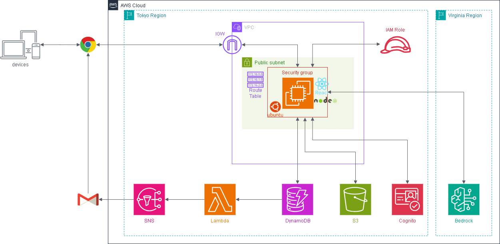

AWS 学習ハンズオン¶
AWS の主要サービスを段階的に学ぶためのハンズオン用アプリです。
Phase 1 から順番に進めることで、EC2・S3・Cognito・DynamoDB・Lambda・Bedrock・ALB・CloudFront を実際に構築しながら学べます。
フェーズ構成¶
| フェーズ | 内容 | 手順書 |
|---|---|---|
| Phase 1 | EC2・S3・IAM・VPC（ファイル管理アプリ） | 手順書 |
| Phase 2 | Cognito（ログイン・認証） | 手順書 |
| Phase 3 | DynamoDB（レビュー投稿・蓄積） | 手順書 |
| Phase 4 | Lambda・SNS（レビュー投稿メール通知） | 手順書 |
| Phase 5 | Bedrock（AI分析・傾向可視化） | 手順書 |
| Phase 6 | ALB + Auto Scaling（高可用性構成） | 手順書 |
| Phase 7 | CloudFront（CDN・HTTPS化） | 手順書 |
| Phase 8 | CloudWatch Logs + SNS（監視・アラート） | 手順書 |
アーキテクチャ全体像¶
